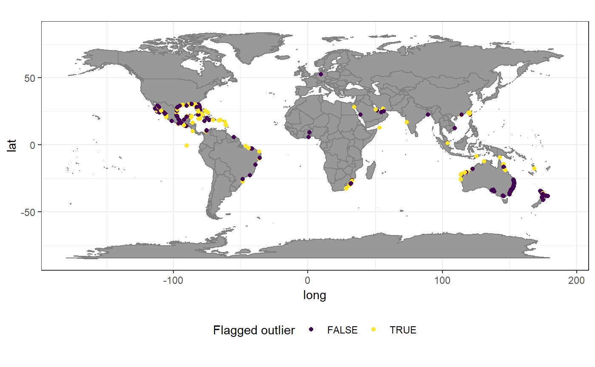
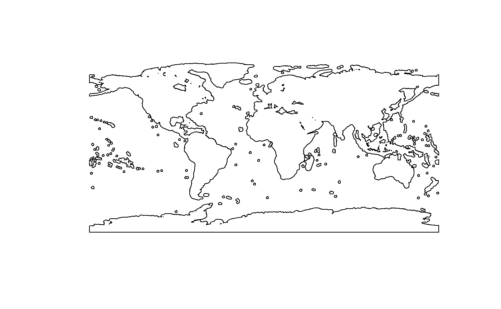
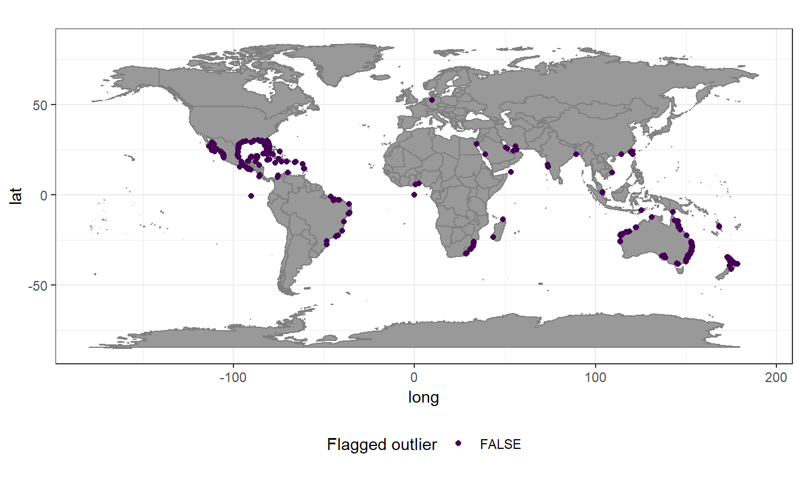

Tutorial_Using_custom_gazetteers.RmdCoordinateCleaner identifies potentially erroneous geographic records with coordinates assigned to the sea, countr coordinate, country capitals, urban areas, institutions, the GBIF headquarters and countries based on the comparison with geographic gazetteers (i.e. reference databases). All of these functions include default reference databases compiled from various sources. These default references have been selected suitable for regional to global analyses. They will also work for smaller scale analyses, but in some case different references might be desirable and available. this could be for instance centroids of small scale political units, a different set of urban areas, or a different coastline when working with coastal species. To account for this, each CoordinateCleaner function using a gazetteer has a ref argument to specify custom gazetteers.
We will use the case of coastlines and a coastal species to demonstrate the application of custom gazetteers. The purpose of cc_sea is to flag records in the sea, since these often represent erroneous and undesired records for terrestrial organisms. The standard gazetteer for this function is fetched from naturalearthdata.com at a 1:50m scale. However, often coordinates available from public databases are only precise at the scale of kilometres, which might lead to an overly critical flagging of coordinates close to the coastline, which is a problem especially for coastal or intertidal species. WE illustrate the issue on for the mangrove tree genus Avicennia.
library(rgbif)
library(dplyr)
library(ggplot2)
library(CoordinateCleaner)
library(viridis)
library(sp)
#download data from GBIF
dat <- rgbif::occ_search(scientificName = "Avicennia", limit = 1000,
hasCoordinate = T, return = "data")%>%
dplyr::select(species = name, decimallongitude = decimalLongitude,
decimallatitude = decimalLatitude, countryCode)
# run with default gazetteer
outl <- cc_sea(dat, value = "flagged")
## OGR data source with driver: ESRI Shapefile
## Source: "C:\Users\az64mycy\AppData\Local\Temp\RtmpCsElrO", layer: "ne_110m_land"
## with 127 features
## It has 3 fields
plo <- data.frame(dat, outlier = as.factor(!outl))
#plot results
ggplot()+
borders(fill = "grey60")+
geom_point(data = plo,
aes(x = decimallongitude, y = decimallatitude, col = outlier))+
scale_color_viridis(discrete = T, name = "Flagged outlier")+
coord_fixed()+
theme_bw()+
theme(legend.position = "bottom")
A large number of the coastal records gets flagged, which in this case is undesirable, because it is not a function of the records being wrong, but rather of the precision of the coordinates and the resolution of the reference. To avoid this problem you can use a buffered reference, which avoids flagging records close to the coast line and only flags records from the open ocean. CoordinateCleaner comes with a one degree buffered reference (buffland). In case a narrower or distance true buffer is necessary, you can provide any SpatialPolygonsDataFrame similar in structure to buffland via the ref argument.

# run with custom gazetteer
outl <- cc_sea(dat, value = "flagged", ref = buffland)
plo <- data.frame(dat, outlier = as.factor(!outl))
#plot results
ggplot()+
borders(fill = "grey60")+
geom_point(data = plo,
aes(x = decimallongitude, y = decimallatitude, col = outlier))+
scale_color_viridis(discrete = T, name = "Flagged outlier")+
coord_fixed()+
theme_bw()+
theme(legend.position = "bottom")